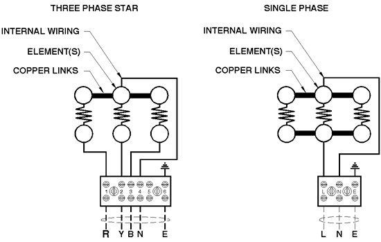
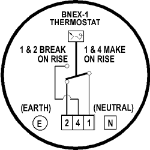

BN Thermic Instruction Sheet
Industrial Flameproof Heaters EEX'e'
INSTALLATION AND OPERATING INSTRUCTIONS
1.0 GENERAL
1.1 All work should be carried out by suitable qualified personnel.
1.2 Carefully remove all protective packaging and visually inspect unit
for any transit damage.
1.3 Check that the heating elements should be parallel and equi-spaced
within the guard.
1.4 Before connection ensure that the supply corresponds with that specified
on the rating label.
1.5 Ensure that the sizes and types of cables to be used are suitable
rated for the load and temperature of the unit.
1.6 Each heater must be protected by a suitable rated over current device.
1.7 All prevailing rules, regulations and bylaws in force at the time
and place of installation must be observed.
1.8 The heater should be securely fixed in position and all terminal connections
checked for tightness before energising.
1.9 Any modification not carried out by BN Thermic Ltd or its approved
agent will invalidate certification and warranty.
2.0 INSTALLATION
2.1 The installer or end user shall ensure that the unit has free and
unrestricted air flow to allow natural convection to occur.
2.2 At no time is the ambient temperature to be allowed to rise above
40°C (T3 & T4 rated units) or 60°C (T2 rated units). This
shall be achieved by end user installation (suggested method - flameproof
room thermostat - BNEX-1).
2.3 Orientation of heater must be strictly adhered to ('TOP' label to
be on top).
2.4 WARNING - air warmers must at no time be covered during operation
as this could lead to dangerous overheating.
2.5 BNEX-1 thermostats - the spigot flamepath surfaces must be checked
to ensure that they are undamaged and the 'o' ring must be fully located
in its groove before re-fitting the cover.
3.0 ELECTRICAL SUPPLY CONNECTION
3.1 Please refer to the following wiring diagram.
3.2 The cable entry is M20 and positioned on the side of the terminal
box.
3.3 The cables must enter the heater terminal box via a certified EEx
e or EEx d cable gland (not supplied) to suit the cable and be fitted
by a qualified person.
3.4 The installer or end user must connect to the supplied terminals within
the terminal box - DO NOT connect to or disturb factory fitted heating
element wiring.
4.0 EARTH CONNECTION
4.1 The external earth connection is located underneath the protective
guard of the BNEX in the same orientation as the elements and on the corner
of the BNEX-1 terminal box.
4.2 The internal earth connection is to one end of the terminal rail (BNEX)
or via a pillar (BNEX-1) inside the terminal box.
5.0 OPERATION
5.1 Once energized the Air Warmer will continue to operate until de-energized
by an external control device (available separately).
5.2 BNEX Air Warmers are designed to operate in ambient temperatures of
up to 40°C (T3 & T4 rated units) or 60°C (T2 rated units)
and the user must ensure that this is not exceeded at any time.
6.0 MAINTENANCE
6.1 All prevailing site safety regulations shall be adhered to at all
times.
6.2 Before and whilst any maintenance activity is carried out, it must
be ensured that there are no hazardous gases present.
6.3 Equipment is to be fully isolated from the electrical supply before
and whilst any work is being carried out.
6.4 Any damage or faults should be notified to BN Thermic Ltd immediately.
6.5 For equipment certified for use in hazardous areas reference should
be made to EN60028 (especially table 1) in addition to the following recommendations.
6.5.1 Three-Monthly
a. Generally inspect the equipment for external damage.
b. Ensure that the spaces between the element fins remain clear and that
the airflow remains unrestricted.
6.5.2 Six-Monthly
a. Isolate the electrical supply and remove the cover.
b. Internals should be clean and dry.
c. Ensure terminals are intact and secure.
d. Heating element insulation resistance to be at least 2 megohm.
e. Refit cover with new gasket if required.
f. Earth continuity must be maintained between all earth points and main
structure.
6.5.3 Annually
a. Check all above.
b. Check for element failure or low insulation resistance.
6.6 Only BN Thermic Ltd or its approved agent to carry out heating element
replacement otherwise the Hazardous Area certification will be invalidated.
6.7 If heaters are being left unused for a period greater than 3 months,
carry out 6 monthly maintenance before energizing.
WIRING DIAGRAMS
 